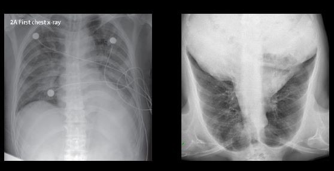

Pneumonia/Covid-19 Detection using CNN
General Description of Pneumonia!
Pneumonia is an inflammatory condition of the lung affecting primarily the small air sacs known as alveoli.Symptoms typically include some combination of productive or dry cough, chest pain, fever and difficulty breathing. The severity of the condition is variable. Pneumonia is usually caused by infection with viruses or bacteria and less commonly by other microorganisms, certain medications or conditions such as autoimmune diseases.Risk factors include cystic fibrosis, chronic obstructive pulmonary disease (COPD), asthma, diabetes, heart failure, a history of smoking, a poor ability to cough such as following a stroke and a weak immune system. Diagnosis is often based on symptoms and physical examination. Chest X-ray, blood tests, and culture of the sputum may help confirm the diagnosis.The disease may be classified by where it was acquired, such as community- or hospital-acquired or healthcare-associated pneumonia.
General Description of Covid-19!
COVID-19 is a contagious respiratory illness caused by the SARS-CoV-2 virus. The virus first emerged in Wuhan, China in late 2019 and quickly spread to become a global pandemic. The most common symptoms of COVID-19 include fever, cough, and difficulty breathing, although some people may experience only mild or no symptoms at all. The virus is primarily spread through respiratory droplets when an infected person talks, coughs, or sneezes. It can also be spread by touching a surface contaminated with the virus and then touching the face. The severity of COVID-19 can vary widely, with some people experiencing only mild symptoms while others may become seriously ill and require hospitalization. The virus is particularly dangerous for older adults and people with underlying health conditions. Preventing the spread of COVID-19 involves following basic hygiene practices like washing hands frequently, wearing masks, and practicing physical distancing. Vaccines have also been developed and authorized for emergency use to help prevent severe illness and death from COVID-19.
Description of the Dataset
There are 5,863 X-Ray images (JPEG) and 3 categories (Pneumonia/COVID/Normal). Chest X-ray images (anterior-posterior) were selected from retrospective(previous) cohorts(common characterstics) of pediatric patients of one to five years old from Guangzhou Women and Children’s Medical Center, Guangzhou. All chest X-ray imaging was performed as part of patients’ routine clinical care. For the analysis of chest x-ray images, all chest radiographs were initially screened for quality control by removing all low quality or unreadable scans. The diagnoses for the images were then graded by two expert physicians before being cleared for training the AI system. In order to account for any grading errors, the evaluation set was also checked by a third expert
Distribution of the dataset


Since data here was imbalanced so to cover for that we have increased the number of training examples using data augmentation
Preview of the images of all 3 Classes
Covid
